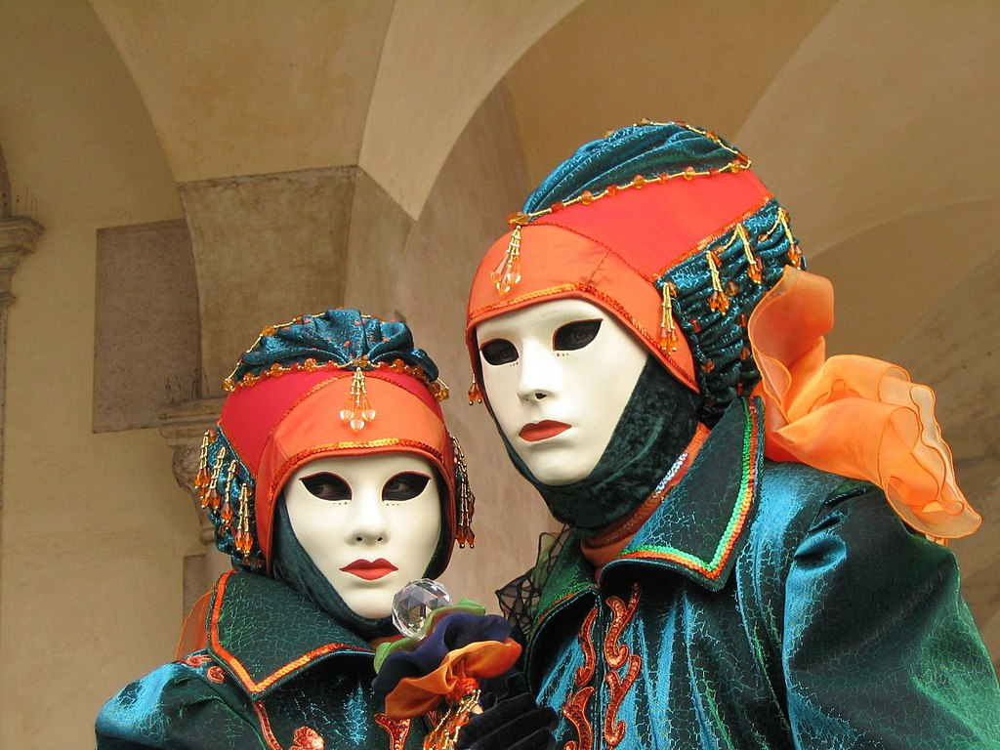

Carnaval
El carnaval es una celebración propia de varios países cristianos y también no cristianos, que tiene lugar inmediatamente antes de la cuaresma cristiana (que se inicia con el Miércoles de Ceniza),
y que tiene fecha variable (entre febrero y marzo según el año).
